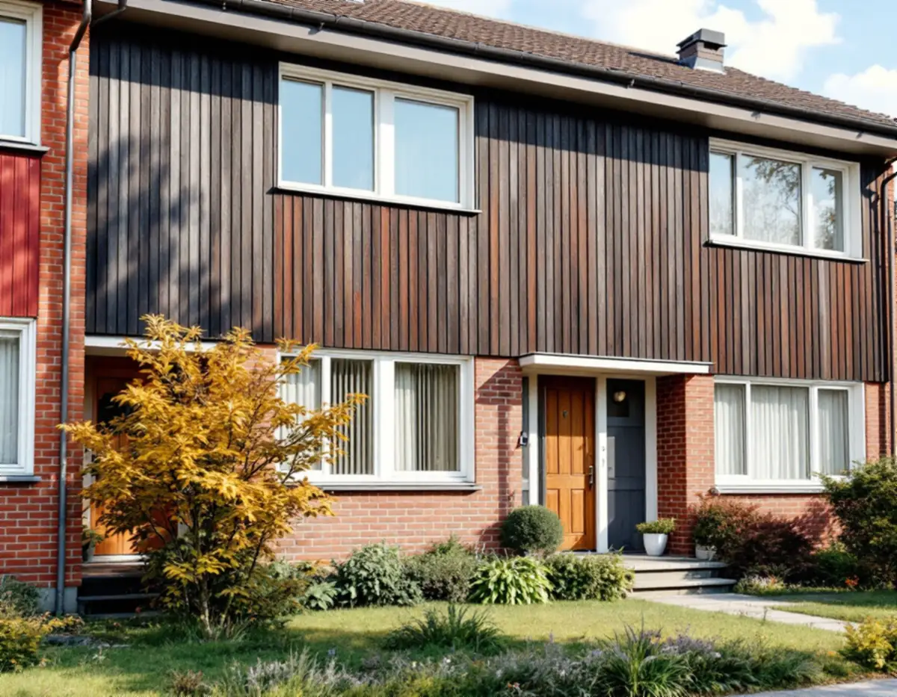
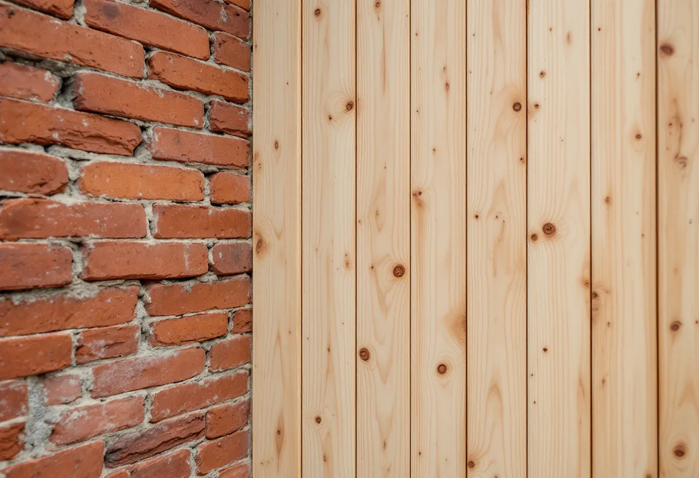
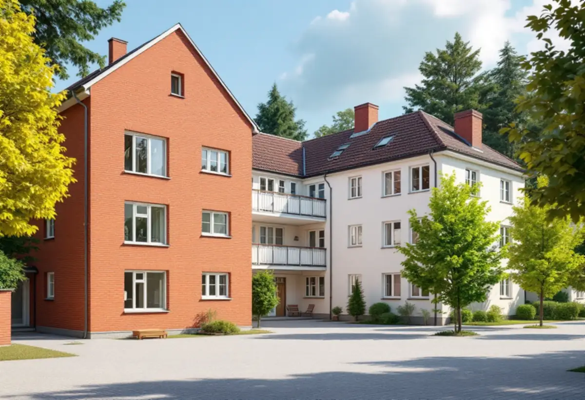

Platsbesök
Gratis besök där vi tittar på material och skador.
Botkyrkas kulturmiljöprogram lyfter fram flera bostadsområden från 1950- till 1970-talen där fasaderna är en stor del av värdet. Geal Entreprenad AB renoverar fasader på villor, radhus och flerbostadshus och tar reda på vad kommunen kräver innan materialet byts.

Kulturmiljöprogrammet beskriver Tuna som ett område med det tidiga 1960-talets bebyggelse av hög kvalitet, planerat under sent 1950-tal och utbyggt under början av 1960-talet. Bland småhusen utmärker sig radhusområdet söder om Lindhovsvägen, som präglas av kombinationen av tegel och trä i fasaderna och ett enkelt, sakligt formspråk.
Programmets riktlinje är att radhusbebyggelsens tidstypiska karaktär värnas, att ursprungliga dörrar och fönster bibehålls och att det enkla formspråket respekteras. För en fasadrenovering betyder det att träpartierna byts eller lagas i samma indelning och att tegelpartierna behålls.

I samma område står lamellhus i tre våningar kring fyra innergårdar, och programmet nämner kombinationen av tegelgavlar och putsade långsidor som ett medvetet drag. Punkthusen i kvarteret Kaplanen började byggas 1958 och avslutas med ett band av kopparplåt, och de har ljusputsade fasader.
I Fittja byggdes enligt programmet omkring 2 500 bostäder i början av 1970-talet, med hög- och låghus, radhus och villor. Prefabricerade betongelement med frilagd ballast och tydliga balkongenheter präglar fasaderna, och de målade balkongfronterna ger färg mot ett annars lågmält uttryck. Riktlinjen är att den repetitiva estetiken i material, volymer och detaljer värnas.
Botkyrka kommun skriver att en fasadändring är en ändring som innebär att byggnaden byter kulör, fasadbeklädnad eller taktäckningsmaterial, eller att dess yttre karaktärsdrag påverkas på annat sätt, till exempel genom nya fönster och dörrar. Att byta från tegel till puts är ett exempel kommunen själv ger.
Inom detaljplan krävs bygglov när ändringen görs på en annan byggnad än ett en- eller tvåbostadshus och på en fasad mot allmän plats. Är byggnaden eller området särskilt värdefullt, eller finns skyddsbestämmelser, krävs bygglov även för fasadändringar som annars är lovfria. Vilka områden det gäller visar kommunens webbkarta.
Boverket skriver att utvändig tilläggsisolering ofta är bäst ur energi- och fuktsynpunkt, men att den ur kulturmiljösynpunkt ofta är problematisk. Fönster och dörrar kan hamna längre in i fasaden, takfoten skjuter inte ut lika mycket och fasaden kan hänga ut över sockeln, så att huset får ett överjäst uttryck.
Arbetsmiljöverket skriver att man ska räkna med att det finns asbest i hus byggda fram till 1982, bland annat i asbestcementskivor, eternit, på tak och väggar. Innan gamla skivor rivs ska materialen undersökas, och för att riva asbesthaltigt material krävs tillstånd. Vi tar in en provtagning innan rivningen planeras.
Boverket skriver att en utvändig tilläggsisolering ibland kan vara oproblematisk om utförandet anpassas till husets utseende, och att det för ett hus som redan är kraftigt ombyggt kan vara ett sätt att rätta till missgrepp och ge huset en utformning som bättre passar dess ålder.

Gratis besök där vi tittar på material och skador.
Kulturmiljöprogram, detaljplan och webbkarta.
Asbest i gamla skivor och fogar undersöks.
Bygglov där material eller kulör ändras och kräver det.
Byte av panel, lagning av tegel och puts.
Målning, plåt och slutkontroll.
Äger du ett småhus ger fasadrenovering rotavdrag på arbetskostnaden när du bor i huset eller har det som fritidshus. Avdraget är högst 30 procent av arbetskostnaden och högst 50 000 kronor per person och år. Material och resor ger inget avdrag.
I en bostadsrätt är fasaden föreningens, och arbetet ger inget avdrag för bostadsrättshavaren. Där avdraget gäller drar Geal det direkt på fakturan.
Fasadytan och materialet, hur mycket panel eller puts som behöver bytas, om asbest måste saneras, tilläggsisolering och om bygglov krävs. Efter ett gratis platsbesök får du ett skriftligt kostnadsförslag.
Puts, panel och tilläggsisolering.
Fasadrenovering i Stockholm →Takbyte, takbesiktning och plåtarbeten.
Takläggare i Botkyrka →Tullinge, Uttran och Tumba.
Takrenovering i Botkyrka →Kartlagren, checklistan och vattnet.
Attefallshus i Botkyrka →Flytt av badrum, stammar och frånluft.
Badrumsrenovering i Botkyrka →Nytt hus, utfart och byggarbetsplats.
Byggföretag i Botkyrka →Tullinges villor och kulörbytet.
Fasadmålning i Botkyrka →Fönstertyper per epok i Botkyrkas villor.
Fönsterbyte i Botkyrka →Radhusen i Tuna.
Fönsterrenovering i Botkyrka →Kataloghus, källargolv och trägolv.
Golvläggare i Botkyrka →Furugolv och parkett i villorna.
Golvslipning i Botkyrka →Kök i villor och radhus, för att bo kvar.
Köksrenovering i Botkyrka →Tidstypiska kulörer från 1960-tal till gamla byar.
Målare i Botkyrka →Rännor, stuprör och plåttak i Botkyrka.
Plåtslagare i Botkyrka →Altan, plank och förråd i villaområdena vid järnvägen.
Snickare i Botkyrka →Material, solpaneler och takkupor.
Takbyte i Botkyrka →Ny tapet på träfiberskivor och gamla lager.
Tapetsering i Botkyrka →Villorna i Tullinge, Uttran och kartan.
Tillbyggnad i Botkyrka →Tullingehuset i omgångar.
Totalrenovering i Botkyrka →